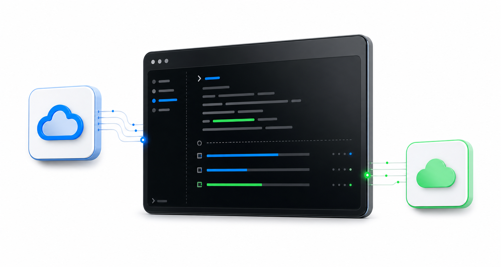

Rapid when possible
Uses Baidu rapid upload first, then can fall back to normal upload when the server-side cache misses.
A careful cross-platform CLI for moving files from Quark Cloud Drive to Baidu Netdisk.

One CLI, local credentials, careful defaults, and a path toward broader cloud-to-cloud migration.
Uses Baidu rapid upload first, then can fall back to normal upload when the server-side cache misses.
Recursive folder selection preserves the source directory layout under your chosen Baidu target path.
Timeouts, path validation, redacted config output, and clear failure summaries make retries safer.
Cookies stay on your machine. Requests go directly from your device to Quark and Baidu.
Use the GitHub package today. Publish the same package to npm later without changing the `q2b` command.
npm install -g github:chang-xinhai/Quark2BaiduRun q2b setup and paste Quark/Baidu cookies.
Run q2b doctor --online to verify login state.
Run q2b, choose files, and start the transfer.
Enough structure for daily use, without forcing users to learn a new toolchain.
q2b setupSave cookies and defaults to a user-level config file.q2bOpen the interactive Quark file picker and transfer selected files.q2b doctor --onlineCheck Node, config, and current Quark/Baidu login status.q2b config showPrint redacted config for support and debugging.Q2B starts with Quark to Baidu, then grows into a more general migration engine.
Cross-platform npm CLI, rapid transfer, fallback upload, recursive selection.
Resume state, transfer reports, rate-limit handling, and richer retry policy.
A provider interface for more netdisks and two-way migration workflows.
Documented extension points for auth, listing, hashing, and upload adapters.